Vprofile project now is running on AWS but its not configured in the best way possible. Before, the application was running basically on Ec2 instances with the services running in them. Now, we are going to run the application on AWS services like RDS, using Beanstalk to IAAC and make it easier to automate the process.
The objective is to minimize operational overhead, operate more efficiently and with better performance using AWS native services. Finally, avoiding upfront payment is still also a positive aspect about using the Cloud.
Using PAAS and SAAS
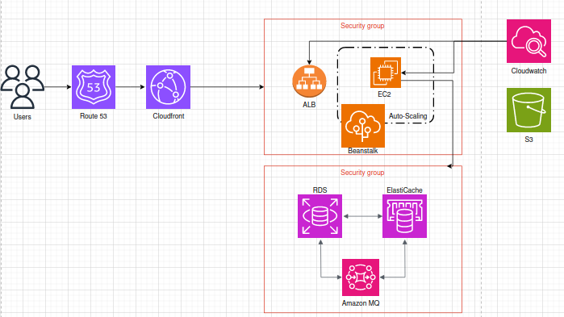
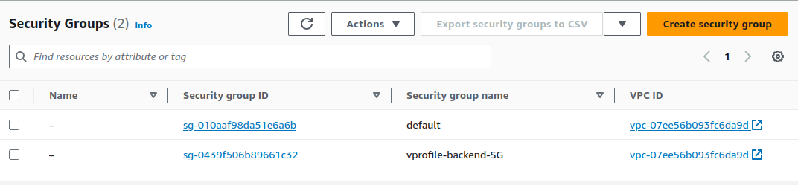
Defining Inboud Rules (SSH and It’s own Security Group, so the services are allowed between each other)
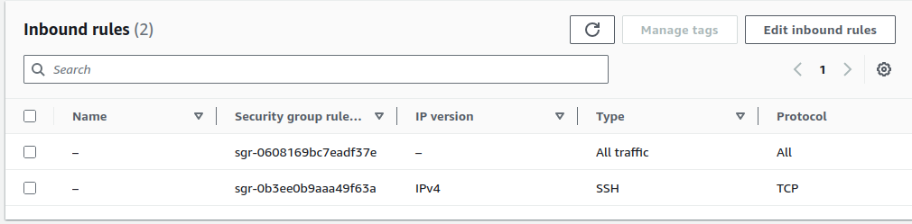
RDS
Subnet Group
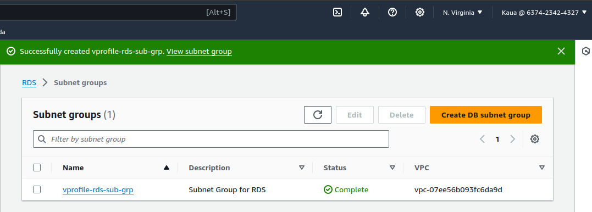
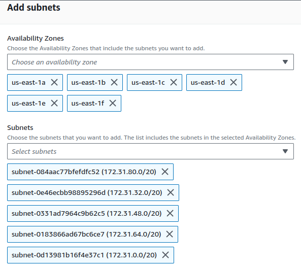
Creating Parameter group
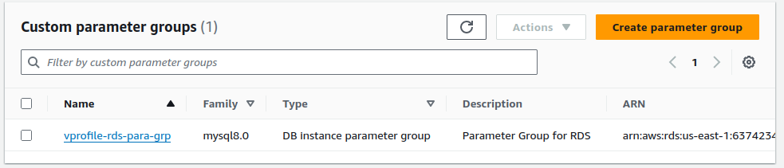
"Creating RDS Instance (MySQL 8.0)"
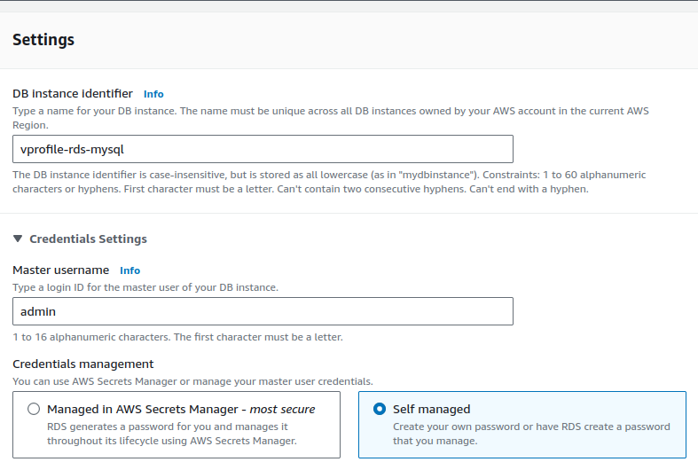
"Creating ElastiCache (Memcached)"
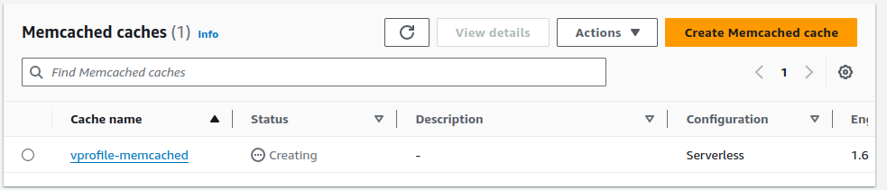
"Creating Amazon MQ (Before: RabbitMQ)"
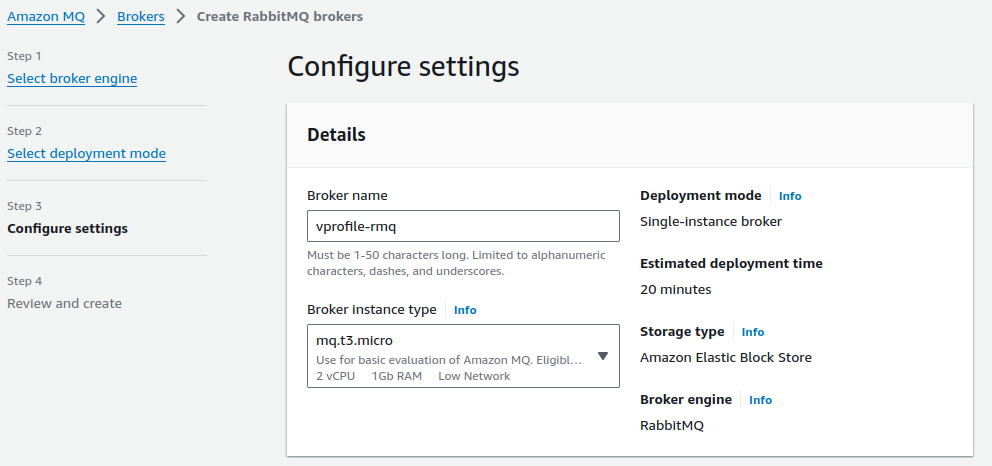
Allow Inbound rules to backend, from Ec2 instances. For this, i took the instance id from Ec2 and allowed on port 3306.
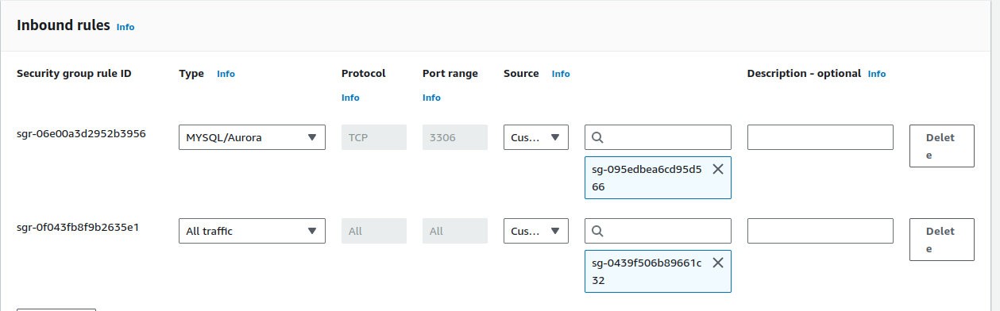
Fetch the database data, into MySQL from an Ec2 Instance
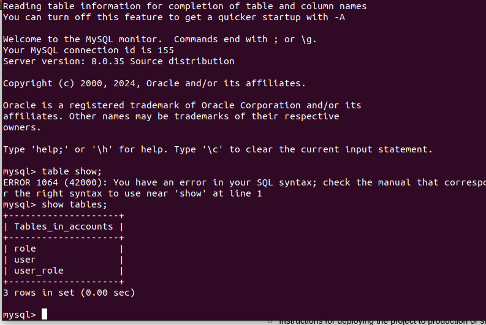
Launching Elastic Beanstalk
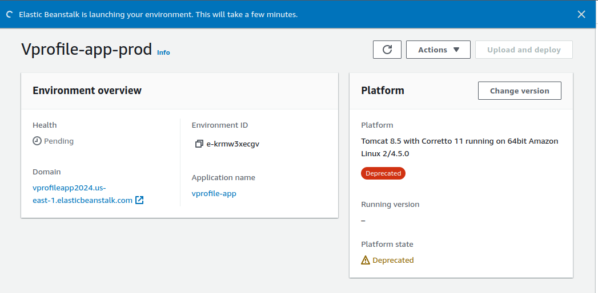
Enabled ACL, updated the security groups for the backend. so the instance from Beanstalk and the backend can be connected.
Then changed the app url endpoints, and filling username and password so the services can connect to the app.
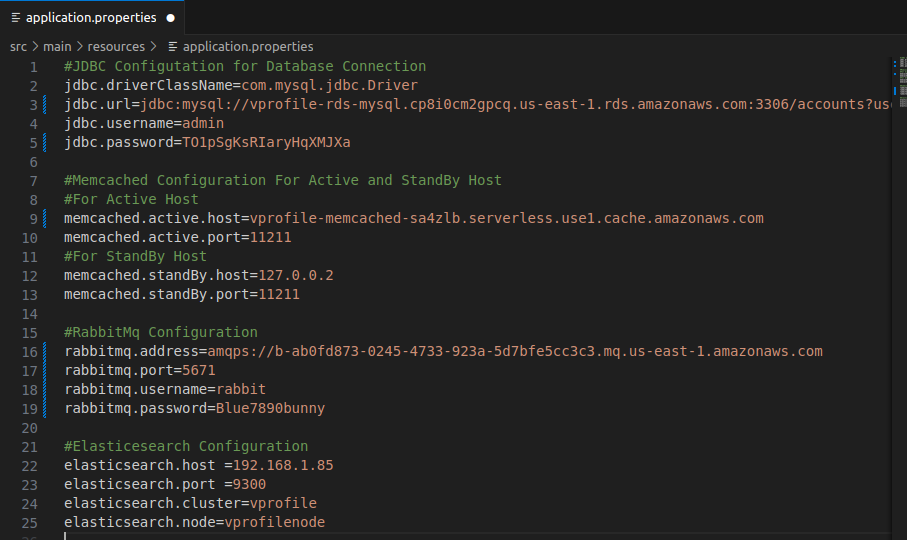
Building Maven Artifact
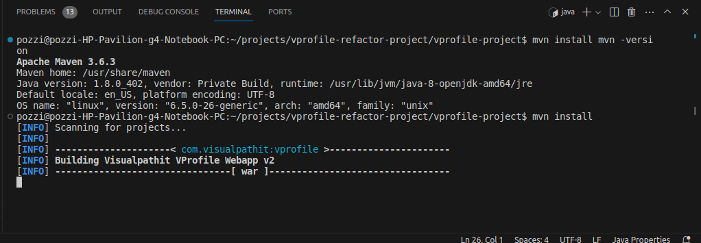
Upload and Deploy the artifact in Beanstalk
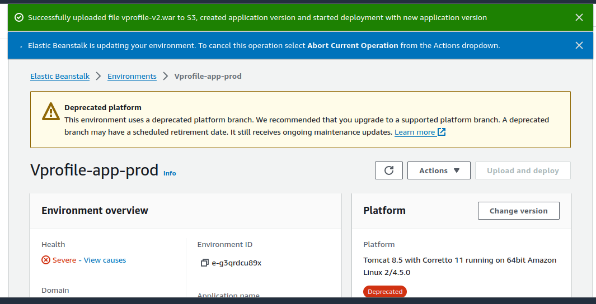
Configured DNS with CNAME and SSL certificate
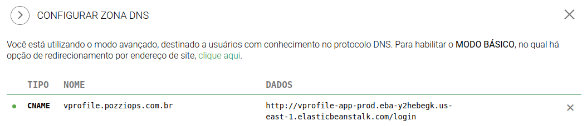
This is the Main page. Once it’s showing everything, like images, it means RDS (database) is working properly
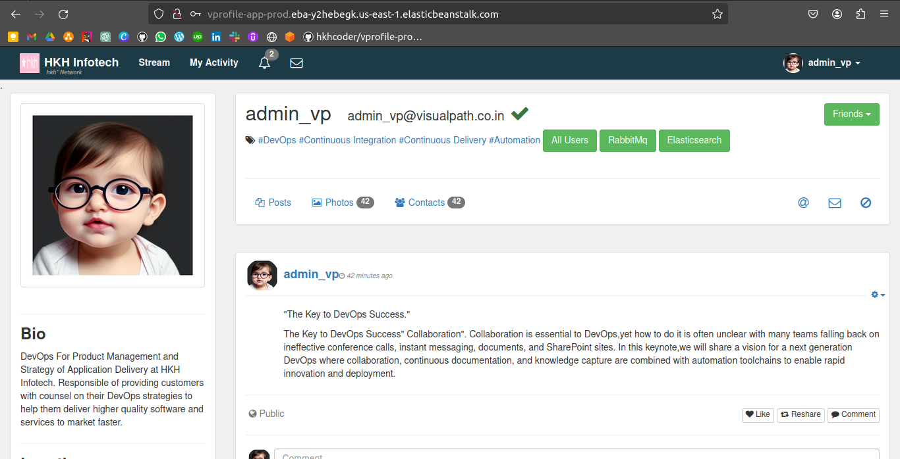
Amazon MQ is working fine as shown below
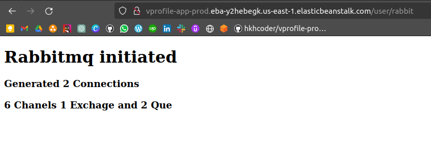
Setup Cloudfront
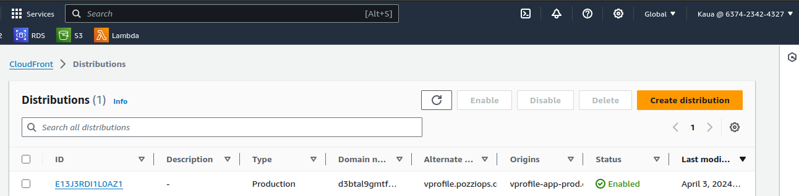
This project was a great way to understand how some services in AWS are connected to each other, how
to configure and deploy Beanstalk to make Cloudfront work, as this is a very used service in AWS.
Any feedback will be welcome.
Kauã Pozzi
I would love to know how i can help.